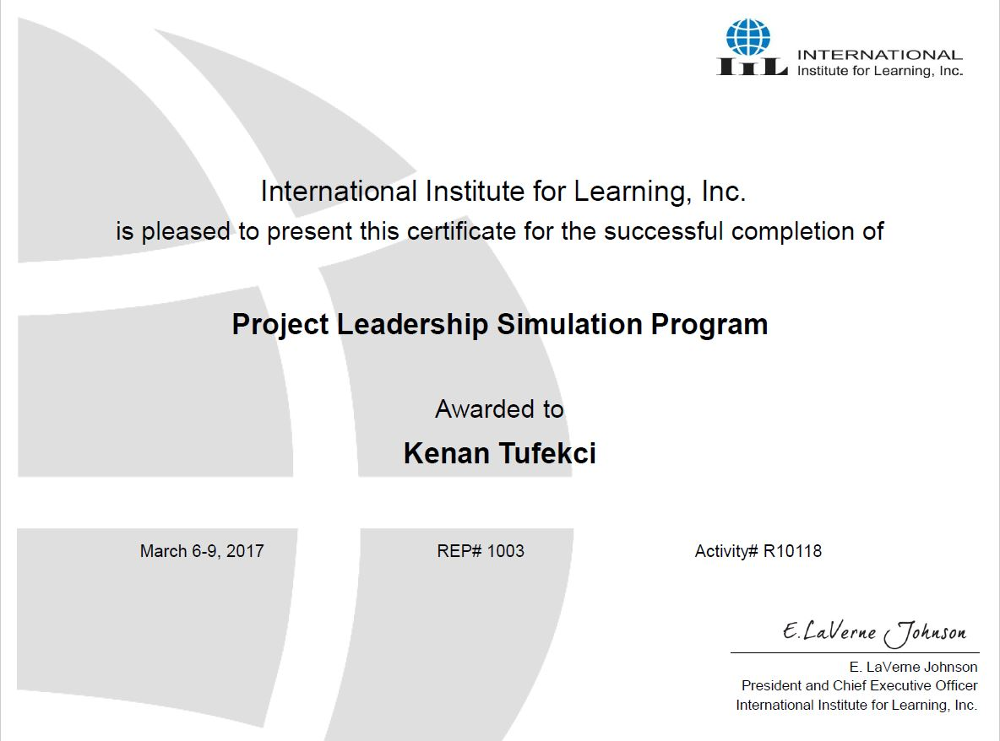
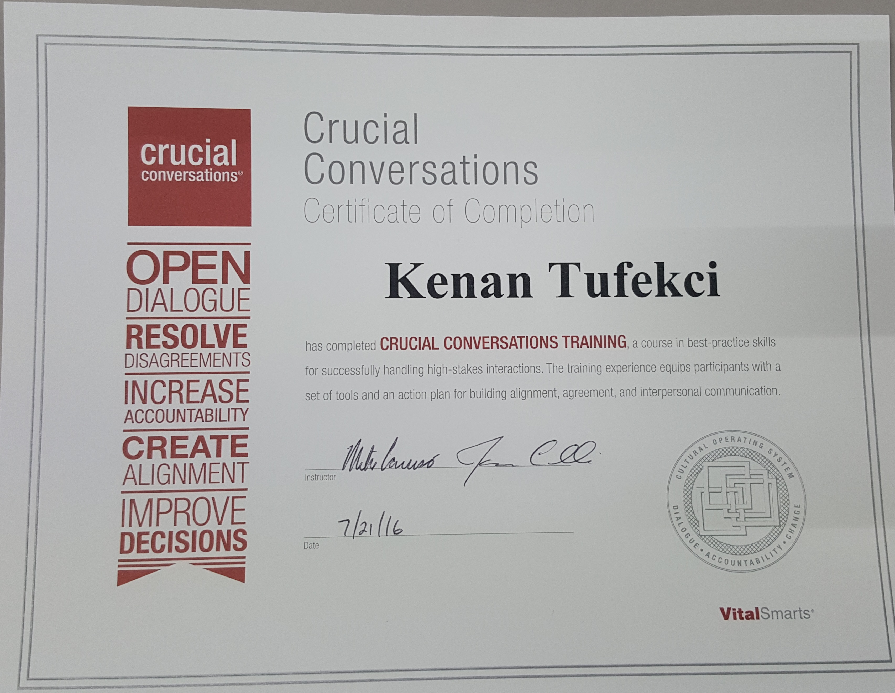

Address
St. Petersburg, FL 33716
Phone
School
Degree
Computer and Information Science and Engineering
GPA
Kenan Tarik Tufekci
Bronze Certification with the Informatica BOST Toolkit

The essence of architecture is the practice of identifying and structuring components to achieve a planned result. Architecture must take into account the environmental context and the interrelationships of components, both external and internal. Architects deliver "blueprints" and "roadmaps" to designers, engineers, and program managers to enable the "construction" or acquisition of the intended capabilities in a given timeframe.
The Proact Toolkit has been designed to leverage a Holistic Enterprise Architecture Methodology and Tool to create models that link and trace the impact of opportunities and transformation programs across various levels of planning.
The Proact Toolkit provides a well-structured framework for organizing these inter-linked planning models based on Four Views of the Enterprise referenced below.
The BOST Framwork
(B)usiness
(O)perations
(S)ystems
(T)echnology
I have recently obtained bronze certification with the Informatica BOST Toolkit for Business Transformation for Enterperise Architecture.

Project Management Simulation Traning
I was part of a 32 hour training cousre offered by the International Insitute for Learning. Highly interactive and experiential, IIL's simulation training integrates proven learning theory with leading-edge computer technology and game-based simulation techniques to deliver lasting benefits. Simulation is a high-impact, energetic and fun way to accelerate understanding, involvement and acceptance of best practices within an organization.
Crucial Conversations
This was a 24 hour training course offered by VitalSmats that Crucial Conversations teaches skills for creating alignment and agreement by fostering open dialogue around high-stakes, emotional, or risky topics—at all levels of your organization. By learning how to speak and be heard (and encouraging others to do the same), you’ll surface the best ideas, make the highest-quality decisions, and then act on your decisions with unity and commitment. Corporate Ovations
I was part of a 16 hour training called Corporate Ovation offered by iSpeak. Within the first hour of this interactive class, you will be on your feet presenting, receiving feedback, and learning how to handle anxiety. This class covers writing and delivering a presentation from beginning to end, with a focus on how to write engaging openings and powerful closings. Whether you regularly present operational reviews, make proposals, communicate to clients, or motivate entire teams, iSpeak’s Corporate Ovations™ for Business Professionals will teach you to quickly gain attention, build credibility, and deliver your message with skill using the Corporate Ovations Process for Presenting. Wonder how the audience sees you? You’ll have the answer because you will leave with videos of your presentations on an SD Card. This workshop is taught by a professional speaker who provides live coaching and feedback.
Other Trainings
Some other trainings that I am currently taking is ITIL certification. I will be taking the exam in May. Another training that I am currently doing is PMP certification. I am 20 hours into a 35 hour training for PMBOK, and already have a years experience of project management. I will apply for my exam next year.